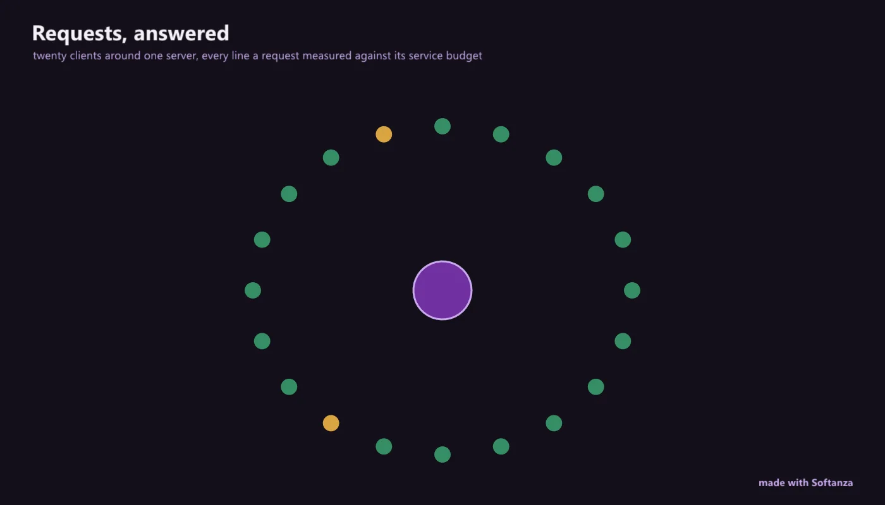

Web et serveur d'applications
Un serveur HTTP compétent, avec un contrat de service intégré, l'authentification et un fournisseur d'identité, et un plan de virtualisation de services qui refuse les faux.
4 Strong · 5 Solid · 2 Partial · 1 Emerging
Mesuré contre : Express · FastAPI · WireMock · Dossiers : base/appserver(s'ouvre dans un nouvel onglet) · base/service(s'ouvre dans un nouvel onglet) · Le guide des fonctions de ce domaine

Repensé depuis les premiers principes
Ce que Softanza a gardé de ce qui marche, et ce qu'elle a repensé, tel que la bibliothèque l'a écrit dans ses documents de conception et ses narrations.
La manière SoftanzaLe serveur est un hôte, pas une bibliothèque appelée à chaque requête : le moteur est déjà chargé et prêt, et le serveur ne fait qu'y amener les requêtes et en rapporter les résultats.
Gardé des meilleures pratiques
- Le routage reste simple : une table méthode, chemin, gestionnaire, avec des paramètres comme /user/:id et un joker final. Les routes exactes passent en premier. source(s'ouvre dans un nouvel onglet)
- La connexion suit les standards publiés : OpenID Connect, clés d'accès, SAML, codes à usage unique. Le jeton change dès que la session gagne des droits, contre la fixation de session. source(s'ouvre dans un nouvel onglet)
- Un back-end de données, c'est du REST sur la base SQLite intégrée : Expose(db, table) fournit lister, lire, créer, modifier, supprimer, à l'abri des injections, avec de vrais 404. source(s'ouvre dans un nouvel onglet)
Repensé
- Le moteur est résident : aucun démarrage à froid, donc nulle grappe pour rester « chaud ». Les workers ne servent qu'à la concurrence et à l'isolement de charge. source(s'ouvre dans un nouvel onglet)
- Un hôte, quatre formes : routes web, back-end de données, flux bruts d'objets connectés et agents hébergés. Les agents partagent la boucle d'événements du serveur, sans runtime séparé. source(s'ouvre dans un nouvel onglet)
- Une connexion ne pose pas un drapeau et ne renvoie pas un simple rôle : elle produit un acteur, avec capacités et niveau de confiance, que tout le programme comprend. source(s'ouvre dans un nouvel onglet)
- On code toute l'application contre des bacs à sable fidèles, puis on passe aux vrais services au déploiement. Le registre interdit un bac à sable en production. source(s'ouvre dans un nouvel onglet)
Two things live here, and the distinctive one isn't the web server. The HTTP server is real and competent -- reactor-driven HTTP/1.1, Express-like routing, built-in HTTPS/mTLS, auto-CRUD sqlite, and ahead of Express and FastAPI a built-in per-request SLA bracket plus an auth router that is also an OIDC provider -- but middleware is registered-but-never-invoked, with no JSON body parsing, streaming or WebSocket. The standout is the service-virtualization plane: stateful doubles under a governance gate where Deploy(:Production) structurally refuses a fake dependency, even for a fully-entitled human.
Ce qu'un artisan en fait, et ce qui se distingue
- A built-in per-request SLA bracket with Prometheus /metrics and distributed tracing, ahead of Express and FastAPI
- A mounted auth router that is also an OIDC provider (discovery, JWKS, authorize, PKCE token)
- Stateful service doubles that enforce the real service's rules -- WireMock-and-beyond
- Deploy(:Production) structurally refuses a fake dependency, even for a fully-entitled human
Ce qui est dû
- Execute the middleware pipeline (registered but never invoked)
- JSON request bodies and streaming responses
- Serve static files; WebSocket serving; latency injection and a status-aware live adapter in the sandbox
- OpenAPI/schema and content negotiation; server-side HTTP/2; deeper MBaaS
La manière Softanza, exécutée
Ce que Softanza fait autrement dans ce domaine, montré par du code tiré de ses narrations et de ses gardes, et exécuté pour cette page.
Une connexion renvoie un acteur doté de capacités et d'un niveau de confiance, pas un rôle en texte.
NOW = 1700000000 # a fixed clock, as in the guard
a = new stzAuth()
a.Register("dana", "pw")
a.GrantRole("dana", "admin")
tok = a.LoginAt("dana", "pw", NOW)
act = a.ActorOfAt(tok, NOW)
? "user : " + act.Name()
? "capabilities: " + @@(act.Kinds())
? "posture : " + act.Posture()user : dana capabilities: [ "effectful", "compute", "sensing" ] posture : trusted
exécuté le 2026-10-01 21:18 dans la bibliothèque au commit 0e72e2e2c ; tiré de base/doc/narrations/stz-auth-the-front-door-narration.md(s'ouvre dans un nouvel onglet)
Le bac à sable du fournisseur d'identité détient une vraie clé et sait émettre un jeton falsifié : le refus se teste avant tout vrai fournisseur.
NOW = 1700000000 # a fixed clock, as in the guard
idp = new stzOidcSandbox("https://idp.local", "my-app")
rp = new stzOidcClient("https://idp.local", "my-app")
rp.SetJwks( idp.JwksJson() ) # the provider's public keys
b = new stzAuth()
b.SetOidcClient(rp)
? "forged token : [" + b.LoginWithOidcAt(idp.IssueForgedIdTokenAt("dana","n-1",NOW), "n-1", NOW) + "]"
? " why : " + b.OidcWhy()forged token : [] why : the signature does not verify against the provider's key
exécuté le 2026-10-01 21:18 dans la bibliothèque au commit 0e72e2e2c ; tiré de base/doc/narrations/stz-auth-the-front-door-narration.md(s'ouvre dans un nouvel onglet)
Les articles de ce domaine (4)
- Mastering URL Manipulation with stzUrl: A Complete Guide 2025
- stzAppServer: The Persistent Computational Web Engine Revolution 2025
- Your First App with stzApp: A World That Lives, and Wants 2026
- Getting Paid and Paying 2026
Les couloirs, un par un
Les couloirs et leurs notes sont cités tels qu'ils ont été lus à la source, le Read from the source on 2026-09-16, from a read-only main worktree.
Les fonctions, par ce qu'elles font
Tester et vérifier
- IsRunning server lifecycle dans stzAppServer
- IsObserved routing interface dans stzAppServer
- IsGoverned governance + cross-part audit dans stzAppBackend
- IsReachable Is the far backend actually answering? (stzAppServer serves /health with no route declared, so this needs nothing from the model.) dans stzAppBackend
- IsSandbox a double declares itself -- see stzServiceRegistry dans stzPaymentsSandbox
- IsEphemeral a directory survives a restart dans stzFileBlobStore
- IsLocalReal a genuine local equivalent, not a fake -- see stzServiceRegistry's postures dans stzFileBlobStore
- HasRoute Exact-only presence check (kept for back-compat / introspection). dans stzAppRouter
Trouver
- LastMs The duration of the last crossing (ms, monotonic clock) -- the marshalling cost of one Create/Rows/RowCount, either mode. dans stzAppBackend
- LastStatus The HTTP status of the last crossing, either mode (0 = it never completed). 401 here means the far side refused the signature. dans stzAppBackend
- LastRoundtripMs governance + cross-part audit dans stzAppBackend
Compter et mesurer
- MeanCrossingMs Mean crossing cost over the whole ledger (refusals, at 0 ms, excluded -- they never crossed). dans stzAppBackend
- NumberOfCallsTo how many times a URL was asked for -- the assertion that catches an N+1 or a retry storm. dans stzHttpSandbox
- NumberOfCalls COST: the fee-free promise, made measurable dans stzLlmSandbox
- Size listing, the S3 idiom dans stzFileBlobStore
Remplacer et modifier
- SetAgentSlice How long a single serve slice may park on the socket before due agents are ticked. Smaller = crisper agent timing, more loop turns. dans stzAppServer
- SetSecureCookies Add Secure to the auth cookies -- TRUE whenever the listener is TLS, so the session cookie never travels in clear text. dans stzAppServer
- SetPhase the phase -------------------------------------------------------- :development / :emulated -> sandboxes are expected. :production -> they are a violation. The phase is the SAME switch stzDelivery already uses, so nothing new decides what is real. dans stzServiceRegistry
- SetActor Bind the acting actor: cross-part WRITES then require an effectful one (an LLMActor reads the whole solution and commits none of it). Reads are sensing and stay open. Unbound = ungoverned (dev). dans stzAppBackend
- SetSigningKey The shared secret that authenticates the crossing. Set it on BOTH sides: the HOST uses it to require a signature, the CLIENT to produce one. It is the same secret, so this one call serves both roles -- which is also why a real deployment must deliver it out of band (env, vault, stzSecretStore), never in the model file or the command line. dans stzAppBackend
- SetStrict strictness dans stzHttpSandbox
- SetFallback A catch-all answer, for pipelines where the text does not matter and only the SHAPE does. Setting one turns strictness off for unmatched prompts. dans stzLlmSandbox
- SetParams Route path params (bound by the router: /user/:id -> Param("id")). dans stzAppRequest
Retirer
- Delete routing interface dans stzAppServer
- Remove S3's DELETE is idempotent: removing what is not there SUCCEEDS. Kept, because a test that asserts otherwise would be asserting a fiction. dans stzFileBlobStore
Convertir
- ParseHttpRequest Parse one complete HTTP/1.1 request (the engine frames it: full headers + Content-Length body, CRLF line endings). dans stzAppServer
- AsRuleGraph NOTE this does NOT duplicate the invariants above. Findings from Findings() already carry the report's shape, so the registry joins the shared CI gate directly: oReport.IngestLegacy(oReg.Findings(), "services"). What the GRAPH adds is the question a flag check cannot ask -- which PART of a solution depends on a fake -- and that needs the delivery's parts joined to these nodes (see stzDelivery.AsRuleGraph and stzServiceRuleSet). dans stzServiceRegistry
Afficher, dessiner et mettre en forme
- Show governance + cross-part audit dans stzAppBackend
Lire et écrire
- SaveModelTo Cells carry their TYPE (n/s) rather than being sniffed on the way back in: a price must stay a NUMBER for the revenue maths, and "looks numeric" is exactly how "007" silently becomes 7 -- a defect this library already paid for once in the CSV reader. Fields are percent-escaped . dans stzAppBackend
- Save the PORT contract ------------------------------------------------ Overwrites silently when the key exists, exactly as S3 does. dans stzFileBlobStore
- SaveFile large payloads, without passing through RAM dans stzFileBlobStore
Parcourir et appliquer
- Run Serve forever (until the process is killed or Stop() is called from a handler). The documented blocking entry point. dans stzAppServer
- RunFor With agents hosted, the serve slice is BOUNDED: ServeOne(nLeft) would otherwise park on the socket for the whole remaining time whenever no request arrives, and the agents -- which live on this same loop -- would never tick. So we serve for at most @nAgentSliceMs, then tick whatever is due, and repeat. Requests and perceive-decide-act interleave on ONE loop. dans stzAppServer
Les explications sont celles que la bibliothèque donne d'elle-même, en anglais, lues dans ses commentaires de documentation le 2026-10-01 04:14, from the library at commit 0e72e2e2c, by the library's own stzSelfDoc over 635 class sources.
Les classes de ce domaine
- stzAppServer · 61 méthodes
- stzServiceRegistry · 40 méthodes
- stzAppBackend · 39 méthodes
- stzPaymentsSandbox · 24 méthodes
- stzHttpSandbox · 23 méthodes
- stzLlmSandbox · 21 méthodes
- stzOidcSandbox · 19 méthodes
- stzFileBlobStore · 18 méthodes
- stzSmsSandbox · 18 méthodes
- stzAppResponse · 15 méthodes
- stzMemoryBlobStore · 15 méthodes
- stzAppRequest · 14 méthodes
- stzSqliteDataSource · 14 méthodes
- stzMailSandbox · 12 méthodes
- stzPasskeySandbox · 11 méthodes
- stzReactorHttpClient · 8 méthodes
- stzAppRouter · 7 méthodes
- stzDlmSource · 5 méthodes
- stzServiceRule · 1 méthodes
- stzServiceRuleSet · 1 méthodes